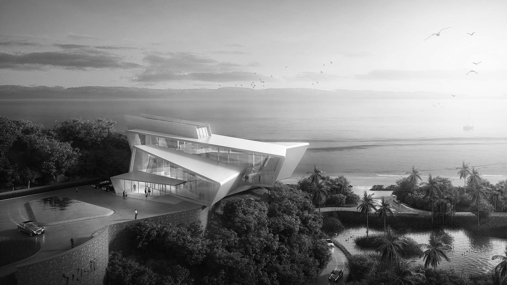
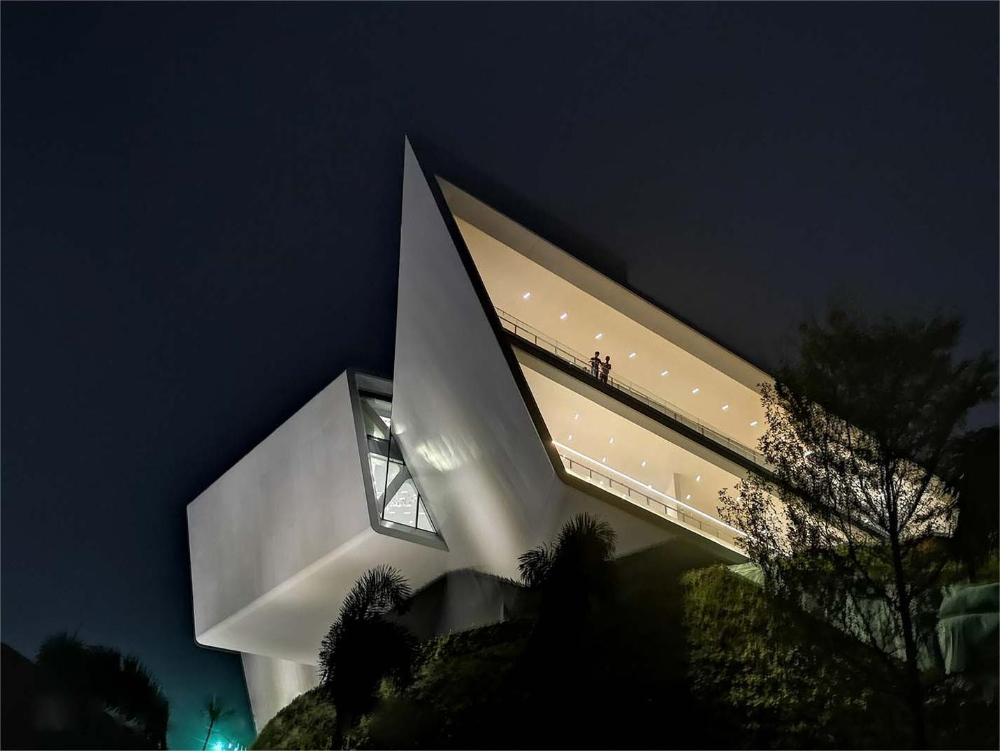
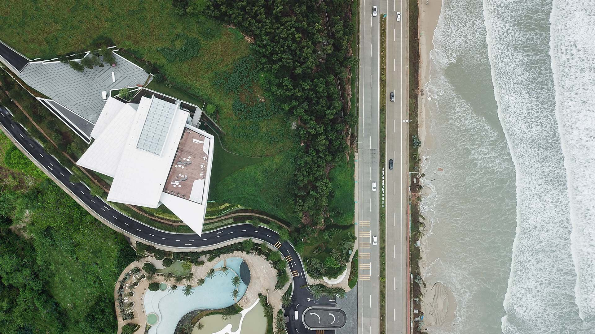
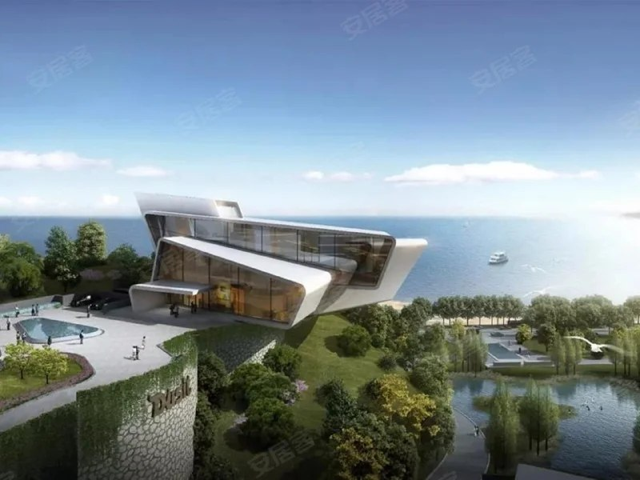

Huizhou, Guangdong
Dusit Shuangyue Bay
H2 project archive · 2017
Dusit
All work
The video below was collected from MSA, If there is any infringement, please contact us to delete. Dreamy Blue Sea And Cloud Top Coastal Life
The aim is to create high-end tourist resort products with strong market competitiveness combining the Central Park and the grand ocean view.
The design team has taken the visual image of the urban interface and coastline into consideration by arranging the low-density hotel front and the high-rise residential home behind to maximize the ocean view by making full use of the diversified landscape resources in the interior of the site according to the site topography and the layer-upon-layer incremental planning. The hotel rooms are introduced with arts and humanities elements of the Southeast Asia appropriately to increase the overall leisure and relaxing holiday atmosphere in the hotel. The high-rise residential buildings in the public area and back area are built with modern simple design techniques to reflect the streamlined style seaside architecture with neat and unified lines. Creating the all-round and most unique resort lifestyle in the diversified environment featuring dynamic sea and tranquil mountains.






- Location
- Huizhou, Guangdong
- Year in source archive
- 2017
- Hotel group in archive
- Dusit
The year is the year stated in the original archive, not a verified completion date. The source may include design-stage imagery. Current naming, status, precise scope and image credits require confirmation before official publication.